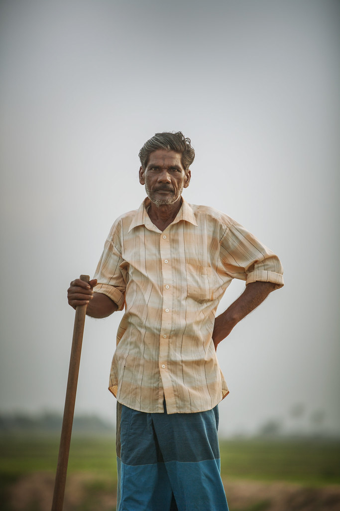

How to Use
Step 1 - Upload the Photo
Upload/capture a clear photo of the weed plant.
Focus on the leaves or flowers.
Step 2 - Check the Categories
Check on these 02 categories of weed control methods.
01. Organic solutions 02. Inorganic solutions
Step 3 - Select the Methods
Now select the most applicable methods for you.
It’s Time to Use the Weed Control Methods!
Use the selected weed control methods in your paddy field, and enjoy your harvest happily.
WHY CHOOSE US ?
Why We’re Different
- Weeds Classifier has the ability to identify the weed plants that can be primarily seen in the rice fields in Sri Lanka.
- The application shows the scientific name of the identified weed plant and other details that can be useful to the users.
- This provides solutions for the identified weed plant under two categories, organic weed controlling methods and inorganic weed controlling methods.
- Weeds Classifier can be used offline.
- Users can use the camera of the device to take a picture or just upload one from the gallery.
- This is a simple and user-friendly application. Easy to use. Mainly target the farmers who have minimal technical knowledge.
- Not only farmers but also students can use the app for educational purposes.

What Our Clients Say
Very helpful for students to identify the weed plants and learn about them. Also, they can learn controlling methods by using this mobile application.
S.A.Kamani
Agriculture teacher in H/Talawa M.V
That application is very useful for new young farmers because most of them can't identify weeds and they do not have the knowledge of weed control methods. Also, it helps to carry our cultural weed controlling methods to the future.
Sirisena Suraweera
Farmer in puhulwalayaya
Download the Weeds Classifier Application
For Android -
For iOS - This version will be released soon